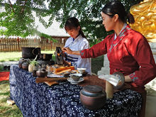

茶道起源于中国。中国人至少在唐或唐以前，就在世界上首先将茶饮作为一种修身养性之道，唐朝《封氏闻见记》中就有这样的记载：“ 茶道大行，王公朝士无不饮者。”（意思就是：喝茶，饮茶等茶道被广泛的推行，风靡一时，王公贵族朝臣没有不喝茶的人。）这是现存文献中对茶道的最早记载。由此可见，最早最完善的茶道流程就是唐代陆羽所创的煎茶茶道。吕温在《三月三茶宴序》中对茶宴的优雅气氛和品茶的美妙韵味，作了非常生动的描绘。 在唐宋年间人们对饮茶的环境、礼节、操作方式等饮茶仪程都已很讲究，有了一些约定俗成的规矩和仪式，茶宴已有宫庭茶宴、寺院茶宴、文人茶宴之分。对茶饮在修身养性中的作用也有了相当深刻的认识。 宋徽宗赵佶是一个茶饮的爱好者，他认为茶的芬芳品味，能使人闲和宁静、趣味无穷：“至若茶之为物，擅瓯闽之秀气，钟山川之灵禀，祛襟涤滞，致清导和，则非庸人孺子可得知矣。中澹闲洁，韵高致静……” 南宋绍熙二年（公元1191年）日本僧人荣西将茶种从中国带回日本，从此日本才开始遍种茶叶。在南宋末期（公元1259年）日本南浦昭明禅师来到我国浙江省余杭县的径山寺取经，交流了该寺院的茶宴仪程，首次将中国的茶道引进日本，成为中国茶道在日本的最早传播者。日本《类聚名物考》对此有明确记载：“茶道之起，在正元中筑前崇福寺开山南浦昭明由宋传入。”日本《本朝高僧传》也有：“南浦昭明由宋归国，把茶台子、茶道具一式带到崇福寺"的记述。 直到日本丰臣秀吉时代（公元1536～1598年，相当于我国明朝中后期）千利休成为日本茶道高僧后，才高高举起了“茶道”这面旗帜，并根据《诗经》总结出茶道四规：“和、敬、清、寂”，显然这个基本理论是受到了中国茶道精髓的影响而形成的，其主要的仪程框架规范仍源于中国。